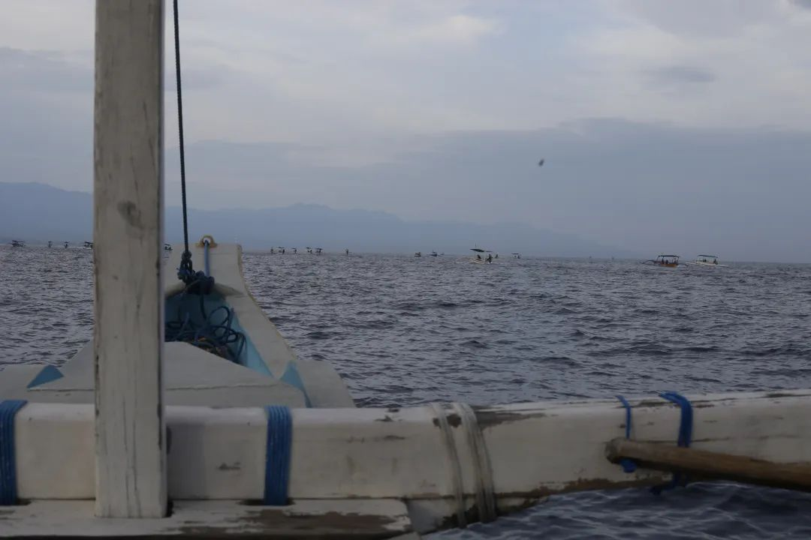

本文是张衔瑜第331篇推文
共计8321个字，322张图
(都没想到放了这么多张图进来)
(也难怪，毕竟十天九晚)
总地来说，和上次印尼巴淡岛的行程一样，巴厘岛和爪哇岛都是我近十年二十年之内不会再去的地方。说长一点也没问题(只是没必要话说那么满)，更私下来说，我一点也不想再去印尼(对不起棉兰岛苏门答腊岛等印尼诸岛 虽然我没去过但也地图炮轰向了你们)。甚至东马来西亚的古晋、亚庇、山打根、仙本那、还有文莱，都不在我的旅行考虑范围内。
原因很简单，因为总体体验说不上好。巴厘岛算是有好有坏，爪哇岛的体验可能是没苦硬吃。不是完全没有好的一面，而是是否值得去吃这个苦，有没有其他替代方案。需要声明的是，本文的情绪化发言仅代表我个人，与其他我身上的标签无关。可以做一个思辨的是，如果我不敢指出一个地方很糟，那我去夸另一些地方好 那些夸好也就没什么意义。能说且敢说出来好坏，虽然未见得准确，但至少斯人不是好好先生，而是事实地在critique每个去到的地方。
老规矩，先交出来旅行日程，换行即是另一天：
暹粒—新加坡—巴厘岛
追海豚和6.5 h按摩
休息，观摩印尼婚礼
巴厘岛飞泗水，坐车去庞越
Bromo火山，回泗水
泗水观光火车到日惹，普兰巴南
婆罗浮屠，默拉皮火山🌋
日惹坐火车到雅加达
养病，去唐人街搞点吃的
下午雅加达飞新加坡
总共十天九晚。这次的旅行伙伴是蒙古海军。蒙古海军既了解蒙古，又了解海洋。很多涉边侦查的事情得以在和本长沙油漆工的捣乱下完成个七七八八。顺便一提，这是第一次到南半球。南半球的风水相比于北半球看风水，要改变的习惯太多了。还好不常在南半球。
到巴厘岛的时候已是晚上。不得不先辱骂一下新加坡樟宜机场的亚航。柬埔寨亚航虽然没法让我免费选座位，但至少在看到我收集易碎贴的时候很高兴地帮我贴上了两个条子。樟宜亚航就不。在可做可不做的行方便时，选择把厕所门锁上。很恼火的原因事实上不是易碎贴，而是巴厘岛机场的六边飞行可以完整看到全岛，且当天能见度很好，这是一个日落航班，而我坐在过道。
在机场买了一些电子烟。东南亚我去过的国家里，印尼是电子烟管控最松的国家，并且街边随处可见电子烟广告。
从巴厘岛机场到罗威纳Lovina海滩有八九十公里，却要开三个小时。和蒙古海军把上辈子打过的胜仗都说完了还没到海滩边。相比于新加坡，巴厘岛挺大的，机场到北边海滩约合两倍新加坡东西宽。相比于巴厘岛的大小，岛上的路就像火锅店涮的鹅肠。街边的店面无限向路中间延伸，机场附近有双向四车道但是堵，离开机场附近常常是单车道或者双向一个半车道。盘山的两车道即使一脚油门一脚刹，均速也不超过四十码。
去罗威纳是为了看海豚。听说这里水质很好，没什么浪。除了看海豚外，有经验的船长还会顺便钓金枪鱼。酒店正选在海滩边。问前台，明早哪里能看海豚呢？前台说，你早上六点起来，步行一分钟到海滩边，船长就在那等着你们。
看了会儿印尼语配音的海绵宝宝，和蒙古海军商量时间后休息了。早上醒来，的确海滩步行可达。很多长开双臂的小船在岸边等着，一船能坐七个人。发挥了一下挑动内卷的传统艺能后，三十五万印尼盾包了一条小船出海。
海风很舒服。船长开到一半停下，打了个电话后，笃定地朝一群船只开去。原来船多的地方，也是海豚聚会的地方。这里的船都是两边张开双臂，双臂的意思是小浮木。中间窄窄的，刚好能串联坐上几个人。船很多，都在堵海豚。二三十条船都在堵海豚，只要海豚出现，就会有游客惊呼，然后所有船只都往那个方向靠过去。
蒙古海军发出质疑：“海豚也有表演型人格吗？海豚会不会是人假扮的呢？”这话也可能是我说的，但我们先假托蒙古海军说的。因为各个船其实都不讲什么规矩，往往空出一片区域有海豚了，就会像我骑摩托车溜车缝一样有船开到中间去，而后所有船都朝那涌。还好我们的船长不太随大流，所以也见到了海滩就在跟前的时刻。
观看野生海豚的意义远大于海滩本身。毕竟这就像钓鱼一样，只知道这里有口，并不能保证上鱼。如果只是想吃鱼，水族馆里看海豚远比在海上看得来得久也来得清晰。如果说水族馆虐待动物，大概船只的柴油味也未必讨海豚喜欢。
反而很喜欢从酒店海滩到海豚观看点的这段距离。六点一刻从海滩出发，到七点四十五返回，刚好是日出。日出从巴厘岛北部山脉上探头。直接把脚伸进海水里。海水并不冷，清澈得反而很是温热。开心地在路上一直玩水。
约了下午两点在乌布的按摩。乌布是巴厘岛的集市中心，又是七十公里，两小时车程。打车单边四十六万印尼盾，约合人民币两百二。司机接单后说自己只能挣三十六万，我问那干嘛不取消掉，线下交易一下四十万，你好我也好。闹心的是两边都取消不了。我倒是不太在意，司机却懊恼地捶了两个小时自己的脑子。真怕他开山路出大事。下大雨，颠得我睡着了。
吃了个乌布特色烧烤，乏善可陈。店门口的猪雕像倒是很吓人，让人想起千与千寻里吃成了猪的小千爸妈。
去了Bali Botanic Day Spa. 这是此次印尼之行的高光时刻。六个半小时的按摩，也是我平均十年难得奢侈一次的长时间按摩。在小红书发了个贴子，说是会让人想起前世来生的按摩，成了最近的高影响力作品(刚看了下是两千多点赞，六万浏览)
究其原因，大概是我刚结束柬埔寨之行，本来就很累。其次前一天从暹粒到新加坡，又从新加坡到巴厘岛。来回罗威纳海滩，单边两三个小时，还早起去看海豚，人已经累麻了。这时候，碰上大雨天来个按摩，本就已经有很多情绪积淀在了。
店员首先引到了一处大房间，窗户是没有的，只有个窗棂在。竹编的窗帘已经卷了起来，可以看到外边的热带雨林和小溪，大雨让人对周边世界的感知都敏锐了起来。按摩师唱过一段祷词，而后开始进入步骤：两小时精油按摩、半小时滴蜡烫头、半小时磨砂按摩、半小时鲜花牛奶浴。毕竟我又不累。躺着听窗外的热带雨林交响，就已经是极大的享受了。又把全身都手法放松下来，这时候反而不必像泰式按摩那样全身正骨似的条条框到，而是清净地听取身边所有。
也有蚊子，不过治疗师发现后会补驱蚊液。窗边蚊子不少，所以牛奶浴的饼干我都没动。包着头巾上楼用晚餐，和蒙古海军一致评价“资本主义世界在享受上到顶了”。
晚餐后开始洗头烫发。天色已经暗了下来。就像固有偏见里对东南亚世界的描述那样，敞开的白色窗户，花砖地板上蒸汽烫头。小青蛙在水池里呱呱，硕大的肥猫蹲卧在小径的拐角。亮堂的灯光和蓝调的天空对比，我们在座位上等着继续被按摩店安排。可惜我们头发都不够多，不然发质护理的步骤更有所值。
最后一步是面部护理。像选磨砂膏一样，这一步需要选择面部护理方式，根据不同皮肤来选择。最后我也没太明白给我上的料是什么。也许是胡萝卜黄瓜萃取物之类的。但没关系，东南亚旅行回来之后每个人都说我黑了好几个度。
大半天的按摩结束了。选了乌布另一家评分不错的本地餐厅。在神龛下吃饭，环境很离谱但味道还不错。只是餐厅外观根本看不出来这是家餐厅。在我的文化认知里，怎么看都是一座庙。也算巴厘岛教我在这里不要以貌取人，大家就喜欢把门楣做成这个样子，也许就和外国人看到国内飞角挑檐门口石狮子一样。
纯按摩也累。拖着疲惫的身子又坐了一小时的慢但快的车到了库塔海滩酒店。库塔美居应该是我住过的美居酒店里服务和设施 相比价格而言 最差的。因为前台脸好看，话好听，但是是骗子。但住下了，幸亏按摩，睡了整个印尼之行最好的一觉。
醒来后，蒙古海军已经准备下海冲浪了。点了个外卖去顶楼天台吃。风吃一半，我吃一半。美居酒店说有人承包了天台泳池，要在那举行婚礼。我想，那就也看看呗。
我一边看着天，一边陆续有人来布置。一位身宽体胖的女士坐到我身后的桌子上。过一会儿，穿上了一边绣着长十字，一边不知道绣着什么纹样的神职人员袍子去证婚了。
想着如果是在国内，高低碰到了是得随个分子然后骗吃骗喝的。但在印尼，我身上也有可以给人写贺卡的纸。但凡有人来跟我说句话，我都会递张贺卡出去，然后说一些恭喜的话。可是没人来说，我也自在逍遥。唯一拉胯的是后来有人去我的Instagram说了些让人很无语的话，让人觉得“啊这里的人竟然这么没劲”
到过海滩的蒙古海军说，在楼顶看是最好的了，海滩边的垃圾未必能在楼上看到，所以楼上其实风景最好。我以为然。所以次日中午也就在天台吃午餐，没兴趣再去海滩走。
因为听不懂一点，所以录了一段话给经常收听敌台的新加坡淡滨尼海军。果然隔壁市的还是更熟悉本地。淡滨尼海军说“主持人好像是说了一句 assalamualaikum?那就是回教的问候语。”我是拿不准这到底是个什么形式。可能就和印尼作为国家一样。
楼顶吃了个被风吹掉头发的午餐。打车软件显示去机场半个多小时，司机走了段两边反光镜都要擦路人的小路后，车程缩短了一半。

印尼狮航不给打印登机牌，非让我们下APP。搞得看起来有点复杂，其实一点也不方便任何人。最后还是用机场工作人员的手机填了信息。从东八区巴厘岛，到东七区的泗水，机上四五十分钟，可延误了一个半小时。飞机上宛如没有空调。坐在安全出口排，空姐用印尼语说了各种注意事项，我只听懂一句印尼语的谢谢Terima Kasih.
印尼语和马来语很像。事实上，印尼本就是荷兰殖民者到来后把散装国家拼成的一个臆造的民族共同体。上世纪六十年代和九十年代两次大规模屠华，以及中间让华族改名禁言的断代，已经让我对这个国家的好感度很低了。曾经印尼还因为想合并马来西亚、文莱、新加坡，而推行更激进的政治政策，并退出了联合国又在若干年后加入。止增笑耳。
人们常常是因为想去布罗莫火山Bromo而来到泗水Surabaya。我们也不例外。报了个两天一夜地火山团。雨季上火山本就是豪赌。司机人很好，是真的很好不是讽刺，既当司机又当向导(在各种攻略里都被认为是要避雷的)(但和蒙古海军也不是第一次雷区跳舞了)
从泗水到庞越Probolinggo的布罗莫火山大约两个半小时高速和一个多小时山路。到山上后，海拔已到两千。低气温让蒙古海军穿上了棉袄，而我以为攻略上都是小朋友写的(事实证明我也很托大)。
晚上十点左右休息，凌晨两点半坐吉普车上山。我们在山顶咖啡店占了个不错的位置。其实来得早并没有什么用，只不过可以占到还不错的咖啡馆的桌子，后来的人只能在门口搬小凳子给我们挡风。
五点去山口的计划推迟到五点半。向导去清真寺祷告后，山顶依然下着雨。我等了两分钟就返回咖啡店了，一张照片也没拍。围坐着的其他队伍向导一直在放歌。我宽慰说：“那些没能遇上好天气的运气都化作了健康的身体和未来的惊喜。”事实证明这也只是一句宽慰罢了。松弛地剪起了指甲。

向导四十岁了，已经是两个十几岁孩子的老爹。他说这辆吉普车和他一个年纪。
返回酒店休息了会，向导问我们还去不去看瀑布。等到瀑布附近时，天还在下着小雨，而进瀑布的小路得坐摩托车。向导也灰溜溜地带我们返回泗水。很多当地的小孩光着脚，穿着校服在路上走。向导说当地可能只上半天学。
因为没看到火山，旅游公司稍微给我们便宜了些。如果像中秋赏月一样有保险买，我一定会买一个火山不见真容险。
在泗水市区逛了逛。本想着也去看一下当地的香料市集，后来发现我们没有本地人。即使看到了香料，凭借他们的口语和我们对于英文香料的了解也没法知道是什么。于是作罢。
体验了一次打车打摩的。是正儿八经地在打车软件上打摩的，有头盔也出保险的那种。没必要再体验下一次了，因为溜车缝的时候车把不掌握在自己手上感觉太过危险。
去了国家清真寺。很是宏伟。攻略说，在高塔上可以俯瞰泗水夜景。是假的。因为四点半就不让上塔了。
一早从酒店去泗水火车站。
早早定下了泗水的火车票，是很期待的旅程。观光火车，可以看到两边的火山。同时车顶带窗户，两边的窗户也很大，叫全景观光列车，甚至座位可以转向去朝着窗户。大为震撼。
订票的时候看到好几排都订满了，以为就是车次很火。其实是一个大妈旅游团。侧写觉得事本地华人群体，说着听不懂的话，姑且认为是印尼语。看携带行李应该是同学聚会或同乡会，总之前半程的谈笑声没停过，后半程的窗户没开过。
更抽象的是一直在发餐。后来发现是固定发餐两轮，一次点心一次正餐，还加一次饮品。蒙古海军在巴厘岛楼顶和列车上用了同样的话语来描述这一行为，为了不挑起更大的争端，在此按下不表。


火山完全不输在庞越看到的火山。未必要去为了孤独星球的照片而雨季拉练。期间路过Sheikh Zayed Great Mosque Surakarta Masjid Raya Sheikh Zayed Solo Surakarta是个清真寺。地名是音译的，也没必要附中文了。每次火车路过主干道时都会把路上的人车拦下。常常是我拍车下的人，车下的人拍火车。有时候也会遇到工作人员的抱胸礼。更经常见到的是扬起右手斜向上方直臂点向车厢。
全景火车可以直接从泗水开到万隆。万隆到雅加达有一两个小时，但没有全景车的选择。后来我们才发现，万隆到雅加达也有这节车厢，只不过不开灯。空载。也就是这节车厢一直挂载。中国援建了雅万高铁，不知道是不是这个原因。如果泗水朝发夕至可以到万隆，再换乘上去雅加达的高铁。我们选择了在日惹Yogyakarta，这个泗水到万隆的中点下车玩两天，顺便看两个世界自然遗产。后来证明真的是与我处在两个世界。
在我的视角里，今年下半年遭过最大罪就是这三天两晚。日惹就像当初在大理那样邪门。日惹和大理都被我列为与我磁场强烈不合的城市。
所以着重笔墨和图片会来展示这一点。
日惹第一天下午去了普兰巴南Candi Prambanan，这里的Candi就像柬埔寨和泰国的Wat一样，都是寺庙的意思。普兰巴南是爪哇岛千年前建的印度教寺庙，后被火山灰掩埋数百年，在荷兰人到后发现至今约两三百年。也就是说，已经几百年没有香火供奉了。
请了个导游。导游开始对比吴哥窟，说吴哥窟是最大的complicated architecture，而这个是最大的单体建筑。还好我先看的吴哥窟，不然以为废土风都像这一样废。不仅废，而且邪门。仅从工艺上来说，日惹的雕刻较之暹粒更富于变化。

普兰巴南还有几个景区主印度庙外的其他佛教小庙。一样的信仰坍塌了，只剩遗迹。有说过，印尼的主要宗教已是伊斯兰教。
逛到Sewu庙时，和蒙古海军说，要不这个门就别进去了吧。但到另一个门时，看到有导游带着进了，我们又跟着进去了。事后证明，这并不像在暹粒逛寺庙那样安全。不在公众号写太多子不语怪力乱神的事。现实层面上，当晚大雨，我们去默拉皮火山也没法去了。我和蒙古海军先后生病。
好奇心害死猫。视频需要的话可以找我拿。吓人而且吓人。

当晚去吃了一家本地推荐的餐厅The House of Raminten，据说曾经的主理人是当地有名的演员。普兰巴南景区里循环播放着令人头晕的音乐。好不容易离开那个景区了，到餐厅又开始放同样的阴乐(没写错字)。我问蒙古海军：“你确定吃到的是肉吗不是别的什么东西？”当时就跟朋友说，那感觉就像志怪小说里写的，晚上缠着金腰带睡觉 早上醒来发现是一条蛇缠在腰上。非常骇人。
早上去日惹皇宫晃了一下。因为现在是当地的寒假，中小学生也都组团到处游荡。日惹是上世纪四十年代的印尼首都。蒙古海军看了看皇宫的装束要求和自己的短裤，再加上只能看博物馆，皇宫在装修，于是作罢。
转去了两小时车程外的Mendut Buddhist Monastery，至少这里比普兰巴南阳间多了。我看湘西贵州的傩戏面具从来没有这种惊心动魄的感觉，而日惹就不。

外面也有一处日惹的微笑。翻版柬埔寨高棉的微笑，但是小得多。
溜达去了Pawon Temple 印尼语Candi Pawon，什么也没得看，路边呲呲响的热水壶一直在当机锋。
路过了一处给酒店里雕佛像的雕刻馆。主理人说，他们也给新加坡供货。我随口应了一下，那下次在新加坡见咯。
因为婆罗浮屠Candi Borobudur的日落观光票约在了三点半，于是和蒙古海军商量着歇脚了一会。的士司机烁等我们出来，然后按打车计价送我们回日惹市区。我说好。
婆罗浮屠把景区建得弯弯曲曲，包括让游客换特制的拖鞋。挺搞笑的一世界自然遗产景区。没有点游览车和换鞋子这样的事，怎么收门票。导游继续狂点吴哥窟，但其实没讲什么。
这里也不欢迎我，和蒙古海军在建筑顶端被淋得两身透湿。属于和日惹相看两厌。
司机已在门口等我们。因为想去看默拉皮火山，需要司机等我们一个小时，于是请司机喝了个汤，我们也买了晚餐。我吃的是后来在泰国没找到机会吃的打抛饭。
攻略说去看默拉皮火山要先关注油管的Merapi Live，看到有地质运动，再结合天文通小程序，有看的再去。我们想管的来着，但都病了于是没管，就往非官方的观景台去。观景台很偏，而且本就是一处民居，没开门也没开灯。
挺冒险的。默拉皮火山是活火山，分危险区域不同而有几级防护区。一级大概是禁止非专业进入，毕竟现在活火山区每天都在流岩浆，我们也是来看岩浆，所以早就禁止攀登了。二级防护大概是听警报准备跑。我们在三级进二级的地方，离火山四公里，收到警报了还可以等一会儿再跑。
但山上也没有网。路灯很少，甚至车辆每五分钟才会有一个路过的摩托或轿车。因为是线下交易，所以一直在放着司机调人来对我们不利。于是看默拉皮火山的同时也留了个心眼防着司机。早说明了只在这留一个小时，钱也给够了，想着应该没事。
看到了活火山喷发。不是那种很夸张地原子弹爆炸，而是云遮雾绕的山顶上淌下来一股又一股的火浆。原来这就是活火山啊。肉眼甚至捕捉不到手机夜景模式这么清晰。要是看布罗莫火山能有这一半的能见度，也不至于旅游公司主动给我们打折。
差不多一个半小时返回市区。在酒店门口给想多要小费的司机使了个坏，蒙古海军发了慈悲。
顺便一提酒店。
本来以为风情酒店能订到跟暹粒高棉宅邸一样有趣，结果就跟日惹给人的整体印象一样阴间。房间里甚至摆了两个人俑在镜子前。刚进去的五分钟内我就变了张布出来把它们都罩上。清洁房间的人大概也觉得不太合理，于是没去动。
但打扫房间的车就像夭折婴儿的小棺材一样吓人。
酒店的早餐也一样，有种类人的感觉。

日惹之行后，我病得不轻。蒙古海军情况比我好一些，不愧是海军。
离开是得快速离开的。到火车站后能量环境混乱都比纯日惹这个城市给人的感觉要好。
一离开日惹，坐上去万隆的全景火车，尤其经过山林的时候，感觉各种怪事都减轻了不少。全景火车依然好看。其一段就像绿野仙踪那样，参天树木掩蔽了天窗。

在万隆换乘，被火车站外的便利店背刺了。炸鸡是冷的，米饭是夹生的。另外一提，印尼和泰国的矿泉水味道都很怪，不如新加坡和中国的矿泉水。甚至有攻略说去印尼要带有滤芯的淋浴花洒，说几天之后就会吓你一跳。我觉得这是有点过分了，可便利店的水也很难喝。
搞错了所以买的不是雅万高铁的高铁票。不过无所谓，终点站离我们的青旅很近。万隆换乘开始到进入雅加达市区，病情主要是咳嗽，就又开始反复了。到雅加达，我对青旅接受程度很高，毕竟这就是青旅而已。
在养病中到了下午。出门游荡了片刻。看到了一些搞爪哇玄学的。
沿克鲁库特河边溜达到了一处前不着村后不着店的地方。本想着去地图上标注的一处繁忙区域逛一逛，但这里的门窗上都锁得不像人折叠五次后可以出入的宽度。心里一惊，这该不会是什么诈骗园区吧。看路人的眼神也不太友善，赶快违例打了个摩托车离开去新唐人街。

唐人街就合理多了。无论是街道还是周围气场，感觉上就是可以待的地方了。在纪伊国屋书店刷了会儿机票。书店很小，也没有任何中文书籍(尽管印尼经过种族政策后还有华人 路上也看到了明显华人建的很大型医院和殡仪馆)。

和蒙古海军分头行动，因为上午我还没恢复，但意外地他也在新唐人街。也难怪，稍微看看雅加达攻略应该都会在这一片而不是其他区域。这里叫Batavia PIK，也有些路牌写着高尔夫岛。可以说雅加达出了这片岛，我们去的其他区域都是另一番光景。

和蒙古海军商量，要不今晚就去吃点正常点的华人餐吧。于是选择了不会大踩雷的海底捞。也就是国内海底捞价格，外加快到及格线的海底捞菜品和服务。没有大差漏。
回程路过独立广场。在车上拍了拍。
拖着蒙古海军在老市区走了走，吃了个百年咖啡店Batavia Cafe，菜品和价格都让人想现场百年。广场对面就是雅加达历史博物馆。不太好意思辨认说哪个可能是从什么地方传过来的。说多了倒显得我去指责当年几大华人帮派不要内斗而被人趁虚而入。
从雅加达到新加坡，虽然我对新加坡颇有微词，但总归转个机什么的不会现场就给我兑现。至少新加坡不像爪哇岛那样当场要我的命。新加坡还是会给我水喝，给我做得不怎么好吃单最多也就是油腻甜腻了点，不会让我怀疑吃的是不是肉和饭。
我对爪哇岛的评价实在是太低了，也就主要指的是日惹，泗水庞越万隆雅加达也只有有限的好感。巴厘岛和巴淡岛相对而言都算说了好话的。所以高光归给巴厘岛的六个半小时按摩，唯恐避之不及算在日惹头上。对磁场玄学之类不屑一顾的人自然会不屑一顾，所以拿着这些来妄图说服我改变印象的人和他们的努力也注定是徒劳。直到后来经过了泰国曼谷和大城府，福建泉州甚至现在回了长沙，我仍不能说就完全消除了爪哇岛对我的负面影响。
和蒙古海军的一致结论，巴厘岛也许十年后能再去六个半小时按摩。但能有其他替代，也随时可以其他替代。印尼虽然是千岛之国火山之国，岛屿哪里都有：西马热浪岛、泰国普吉岛和马尔代夫，火山就更不如直接飞冰岛雷克雅未克。所以，自然地理和人文地理都不值得来再探。
图为雅加达到新加坡的路上拍的舰船排队进港新加坡。以及蒙古海军的驻新加坡办事处宿舍楼外景色。